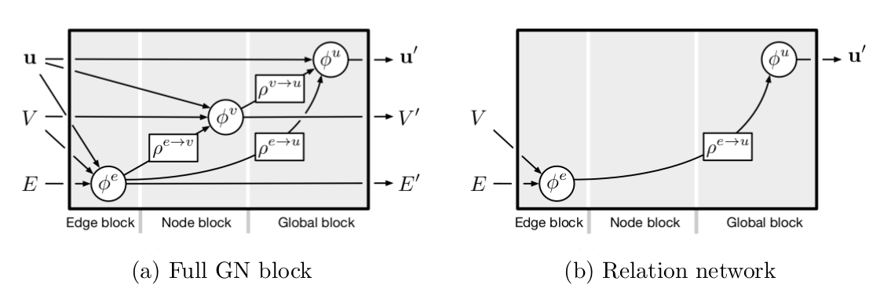

Few years after the IN paper, Battaglia et al. (2018) showed that the IN can be cast into a special case of a broader framework, termed Graph Networks (GNs). They hypothesize that despite the recent successes in deep learning with minimal representational biases, key ingredients of human-like intelligence such as combinatorial generalization1 remain out of reach. Arguing that solving this challenge should be a top priority of current research, they recommend2 the use of integrative approaches that build strong relational inductive biases3 into deep learning architectures. By presenting and formalizing a general GN framework for entity- and relation-based reasoning, they conclude that this framework could be a stepping stone towards combinatorial generalization.
Model Description
Similiar to the IN model, the GN block can be understood as a graph-to-graph module using a message passing scheme. In contrast to the IN, the GN block includes global attributes instead of external effects and uses these global attributes to update the edge attributes and node attributes instead of only updating the node attributes. Accordingly, the message passing scheme is slightly more complex.
Definition: Let \(G=\langle \textbf{u}, V, E \rangle\) be an attributed, directed multigraph in which the global attribute (vector) \(\textbf{u}\) represents system-level properties (e.g., gravitational field), the set of nodes \(V=\\{\textbf{v}_j\\}\_{j=1 \dots N_V}\) represents entities4 and the set of edges \(E = \\{ \langle \textbf{e}_k, r_k, s_k \rangle \\}\_{k=1\dots N_E}\) represents the attributed relations, i.e., the triplet \(\langle \textbf{e}_k, r_k, s_k \rangle\) defines the \(k^{\text{th}}\) relation from sender \(o\_{s_k}\) to receiver \(o\_{r_k}\) with relation attribute(s) \(\textbf{e}_k\).
Formally, the (full) GN block is defined as follows
\[ \begin{align} \begin{split} \text{GN}(G) &= \text{GN} (\langle \textbf{u}, V, E \rangle) = G^\prime\\ &= \left\langle \underbrace{\phi^{u} \Big(\textbf{u}, \rho^{v\rightarrow u} \big(V^\prime\big), \rho^{e\rightarrow u}\big(E^{\prime} \big) \Big)}_{\textbf{u}^\prime}, \underbrace{\phi^{v} \Big(\textbf{u}, V, \rho^{e\rightarrow v}\big(E^\prime \big)\Big)}_{V^\prime}, \underbrace{\phi^{e} \Big(\textbf{u}, V, E\Big)}_{E^\prime} \right\rangle, \end{split} \end{align} \]
where the updates within the graph triple \(G=\langle \textbf{u}, V, E \rangle\) occur from right to left. More specifically, \(\phi^e\) updates the edge attributes of all edges to compute the updated edge set \(E^\prime\) as follows
\[ \begin{align} E^\prime = \phi^{e} (\textbf{u}, \textbf{V}, E) = \left\{ f^e \big(\textbf{e}_1, \textbf{v}_{r_1}, \textbf{v}_{s_1}, \textbf{u}\big), \dots, f^{e} \big(\textbf{e}_{N_E}, \textbf{v}_{r_{N_E}}, \textbf{v}_{s_{N_E}}, \textbf{u}\big)\right\}. \end{align} \]
The updated edge set \(E^\prime\) is used to compute the aggregated updated edge attributes per node \(\overline{\textbf{e}}_i\) using the aggregation function \(\rho^{e\rightarrow v}\), i.e.,
\[ \begin{align} \forall i \in \{1, \dots, N_V\}: \overline{\textbf{e}}_i = \rho^{e\rightarrow v} (E^\prime) = \rho^{e\rightarrow v} \Big( \left\{ \big(\textbf{e}_k^\prime, r_k, s_k\big) \right\}_{r_k=i, k=1:N_E}\Big). \end{align} \]
The results are used to compute the updated node set \(V^\prime\) using \(\phi^v\) as follows
\[ \begin{align} V^\prime = \phi^v \Big(\textbf{u}, V, \rho^{e\rightarrow v} \big( E^\prime \big) \Big) = \{ f^v \big(\overline{\textbf{e}}_1, \textbf{v}_1, \textbf{u}\big), \dots, f^v\big(\overline{\textbf{e}}_{N_V}, \textbf{v}_{N_V}, \textbf{u}\big)\}. \end{align} \]
Lastly, the global attribute is updated towards \(\textbf{u}^\prime\) by aggregating the edge and node attributes globally, and then applying \(\phi^u\). The figure below summarizes the internal structure within a (full) GN block and shows how different variants such as the relation network (Raposo et al., 2017) can be identified within the GN framework.
|  |
|---|
| (a) The internal GN block structure in its broadest formulation is shown including three update and three aggregation functions. (b) The relation network by Raposo et al. (2017) can be identified as a special case of the broader GN framework which only uses the edge predictions to predict global attributes. Taken from Battaglia et al. (2018) |
The GN block can be understood as a building block to compose complex multi-block architectures, e.g., by stacking GN blocks similar to stacking layers in MLPs or reusing a GN block in a recurrent fashion. Additionally, the features inside the GN such as node attributes can be input to a standard MLP to infer abstract properties such as the potential energy (which was done in the IN paper (Battaglia et al., 2016)).
Footnotes
Battaglia et al. (2018) define the principle of combinatorial generalization as the ability of
constructing new inferences, predictions, and behaviors from known building blocks.↩︎The paper was written by a large group of 27 researchers from DeepMind, GoogleBrain, MIT and University of Edinburgh. As directly stated in the abstract, it
is part position paper, part review, and part unification.↩︎Battaglia et al. (2018) use the term relational inductive bias to
refer generally to inductive biases which impose constraints on relationships and interactions among entities in a learning process. They motivate the use of relational inductive biases by human cognition which also uses (yet-to-understand) mechanisms for representing structure (e.g., world is understood as composition of objects) and relations (e.g., distance between objects).↩︎Battaglia et al. (2018) define an entity as
an element with attributes. Thus, the term entity is more general than object capturing objects, parts of objects or any other attributed structure.↩︎